开心果 Need Car · 2023-03-05T08:33:00+08:00 · 微信原文
作为一个程序员，VSCode、CMake并不陌生，然而，在MCU的开发过程中，底层很少选择使用CMake去编译工程，多数还是使用目标芯片对应的工具链编译，常见的编译器：HighTec、Tasking、GreenHills、Keil等等。如果进行SOA（Service Oriented Architecture）架构开发，使用一些软实时操作系统时（eg：Linux），搭配CMake使用，构建进程的编译会方便很多。本文，主要介绍VSCode+CMake环境搭建以及示例。
1、VSCode、CMake安装
（一）VSCode官方下载地址
1、CMake、CMake Tools插件安装，如下所示：
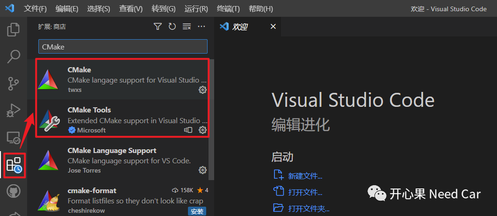
2、C/C++、C/C++ Extension Pack插件安装，如下所示：
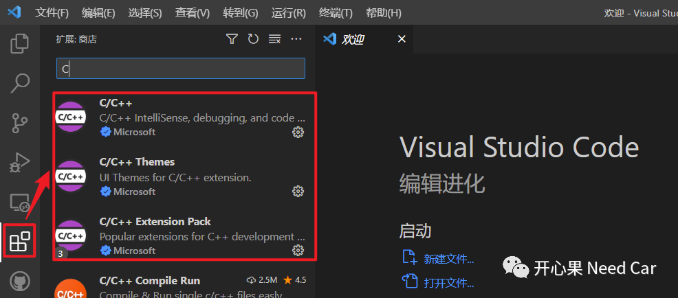
2、源文件编写及编译
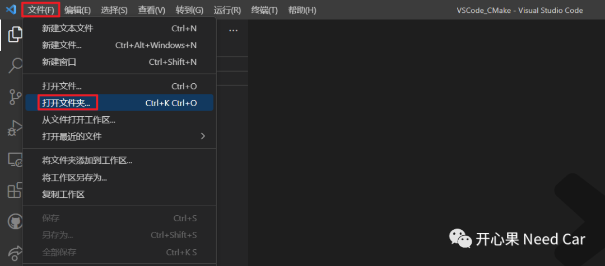
（一）CMakeLists.txt文件编写
CMakeLists.txt文件内容如下所示：
project(CMakePro)set(CMAKE_C_COMPILER "gcc")set(CMAKE_CXX_COMPILER "g++")set(CMAKE_CXX_STANDARD 11)aux_source_directory(. DIR_TOOT_SRCS)add_executable(CMakePro ${DIR_TOOT_SRCS})
using namespace std;int main(){vector<string> MsgInfo {"HelloWorld","VSCode","CMake"};for (const string& info : MsgInfo){cout << info << " " << endl;}getchar();}
（三）另存工作区
具体操作：文件->将工作区另存为...
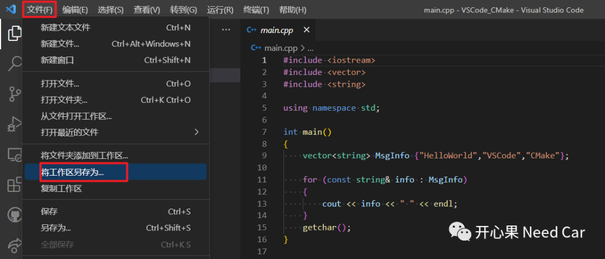
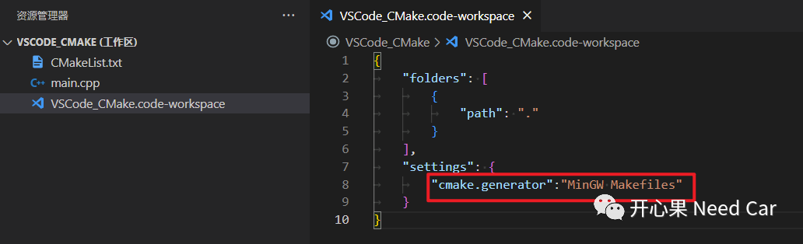
"cmake.generator": "MinGW Makefiles"使用快捷键：Ctrl+Shift+P，选择目标CMake工具包，如下所示：
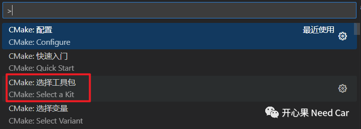
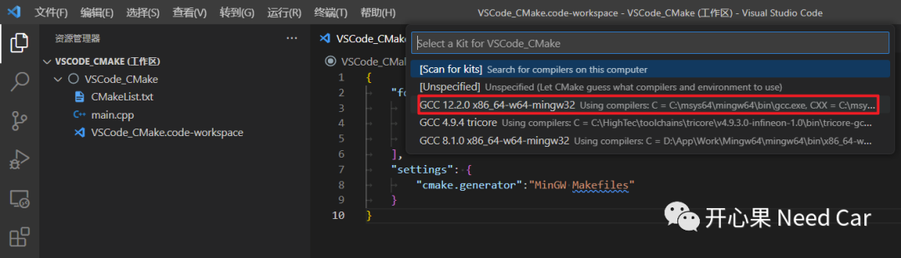
3、编辑配置文件
（1）创建.vscode文件夹
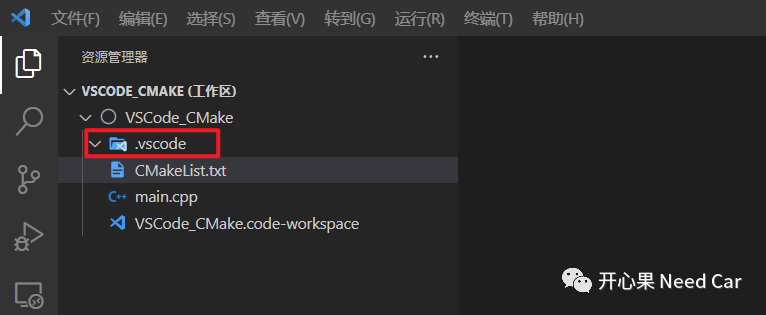
{"configurations": [{"name": "GCC","defines": ["_DEBUG", "UNICODE", "_UNICODE"],//g++路径"compilerPath": "C:/msys64/mingw64/bin/g++.exe","cStandard": "c11","cppStandard": "c++17","intelliSenseMode": "windows-gcc-x64","configurationProvider": "vector-of-bool.cmake-tools","includePath": ["${default}","${workspaceFolder}/**"]}],"version": 4}
{"version": "0.2.0","configurations": [{"name": "C/C++: g++.exe build and debug active file","type": "cppdbg","request": "launch","program": "${fileDirname}\\${fileBasenameNoExtension}.exe","args": [],"stopAtEntry": false,"cwd": "${fileDirname}","environment": [],"externalConsole": true,"MIMode": "gdb","miDebuggerPath": "C:\\msys64\\mingw64\\bin\\gdb.exe","setupCommands": [{"description": "Enable pretty-printing for gdb","text": "-enable-pretty-printing","ignoreFailures": true}],"preLaunchTask": "g++"}]}
{"tasks": [{"type": "cppbuild","label": "g++","command": "C:\\msys64\\mingw64\\bin\\g++.exe","args": ["-fdiagnostics-color=always","-g","${file}","-o","${fileDirname}\\${fileBasenameNoExtension}.exe"],"options": {"cwd": "${fileDirname}"},"problemMatcher": ["$gcc"],"group": {"kind": "build","isDefault": true},"detail": "Task generated by Debugger."}],"version": "2.0.0"}
当然，如上的*.json文件也可以通过"调试配置"自动生成，选择调试方式，会自动生成对应的*.json文件，如下所示：
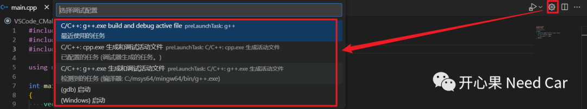
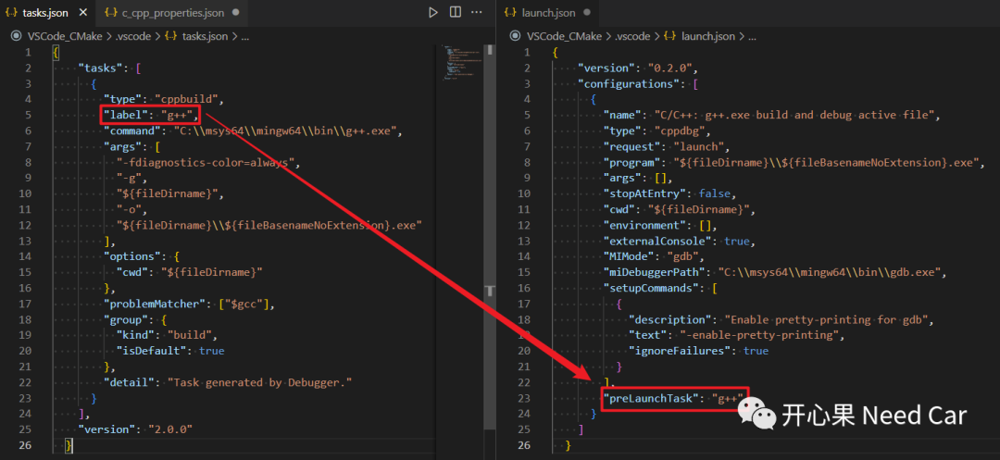
4、使用CMake编译源文件
可以在终端使用命令查看CMake和Make的安装情况，如下所示：
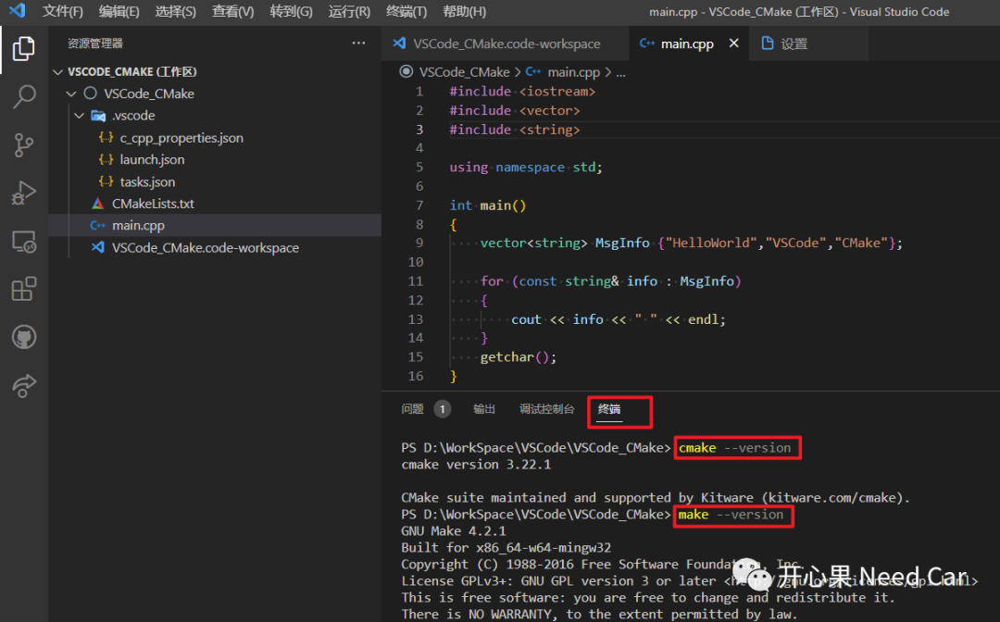
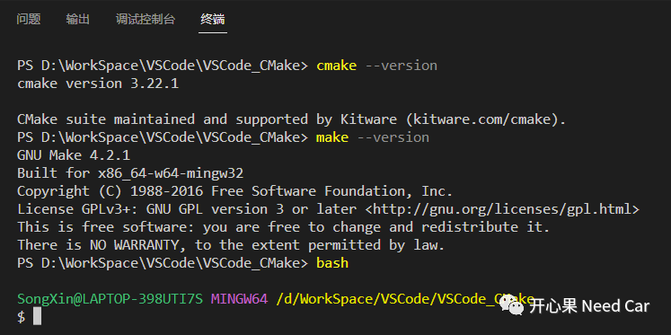
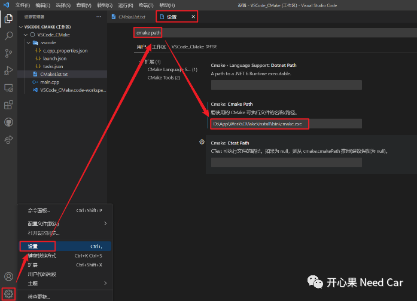
（一）终端中，手动进行源文件编译
1、使用cmake命令，如下所示：
cmake -S . -B Build -G "MinGW Makefiles"提示：-B 构建项目文件所在的目录，-G（Generator ），设置 IDE。
在源文件对应的文件夹下会自动生成一个build文件夹，如下所示：
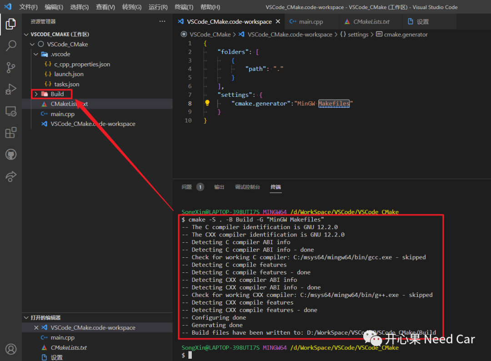
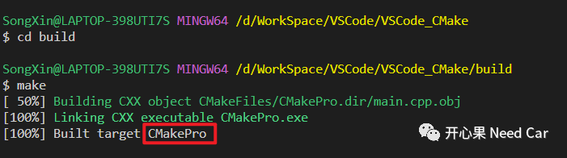
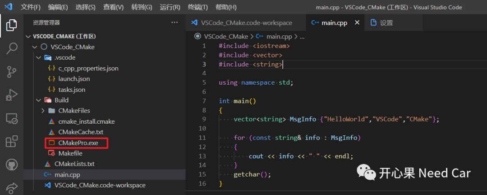
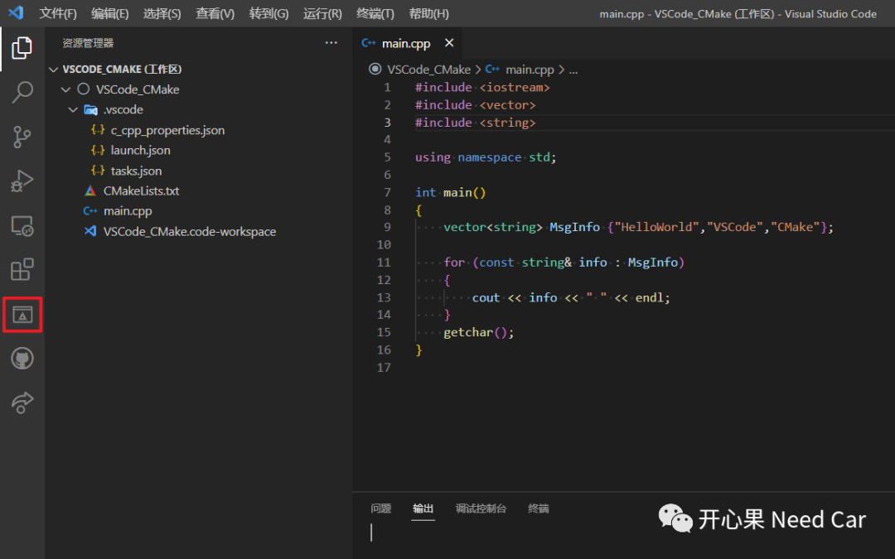
2、进行项目配置，如下所示
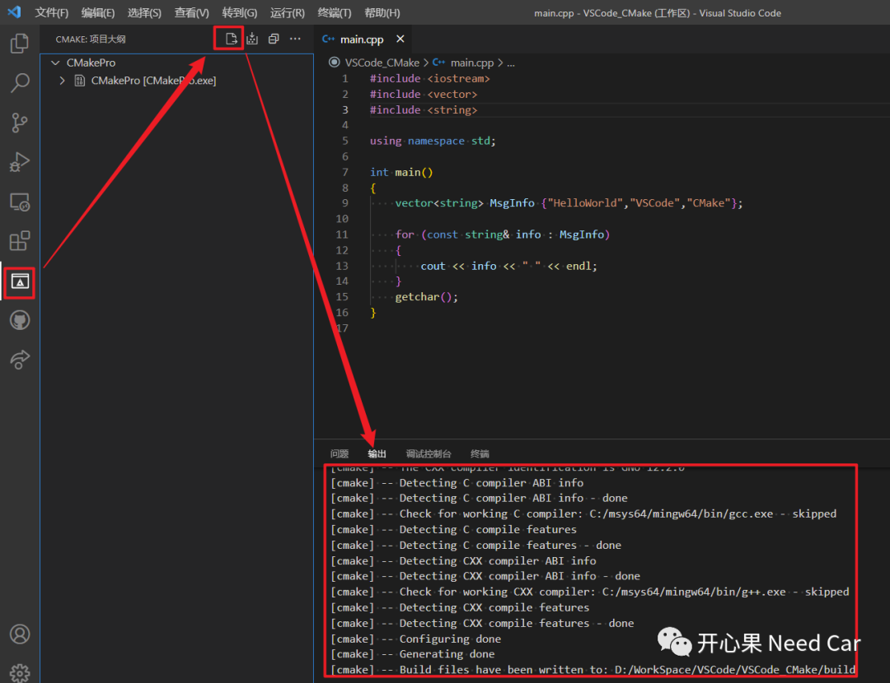
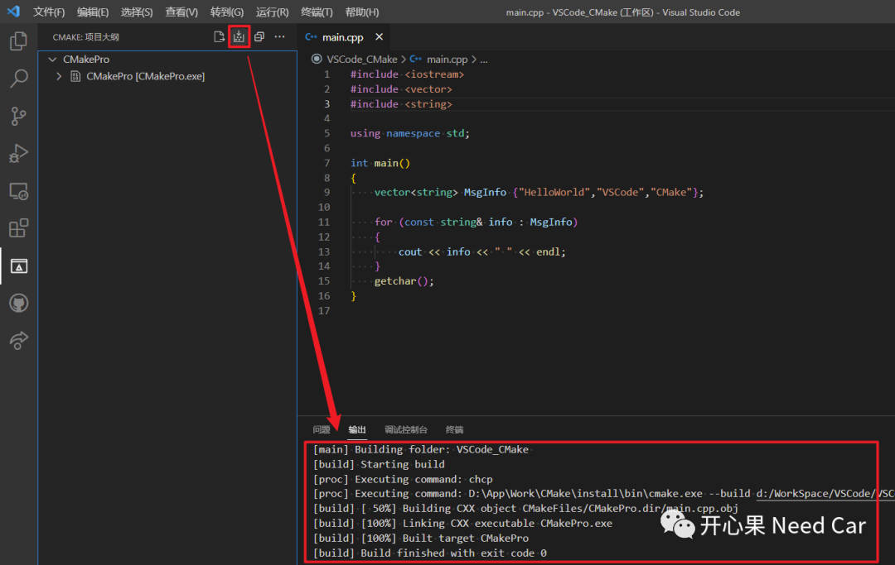
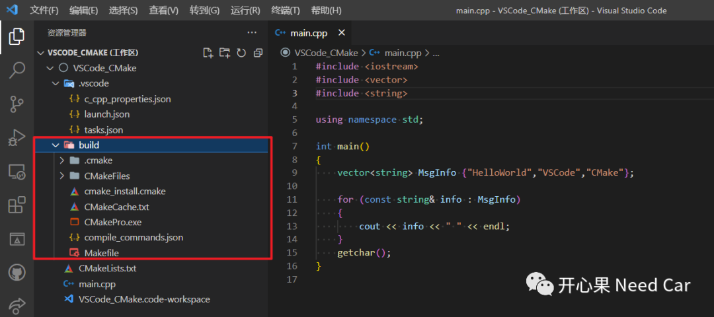
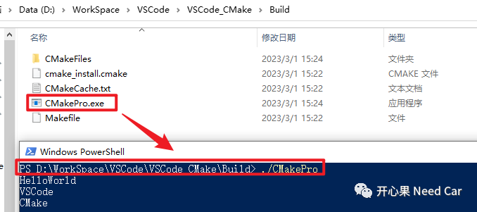
5、Debug程序
（一）在调试C/C++文件中选择"调试C/C++文件"，如下所示：
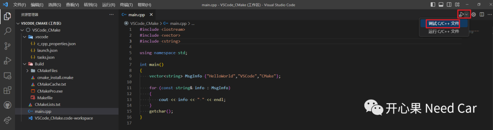
（二）程序调试如下所示：
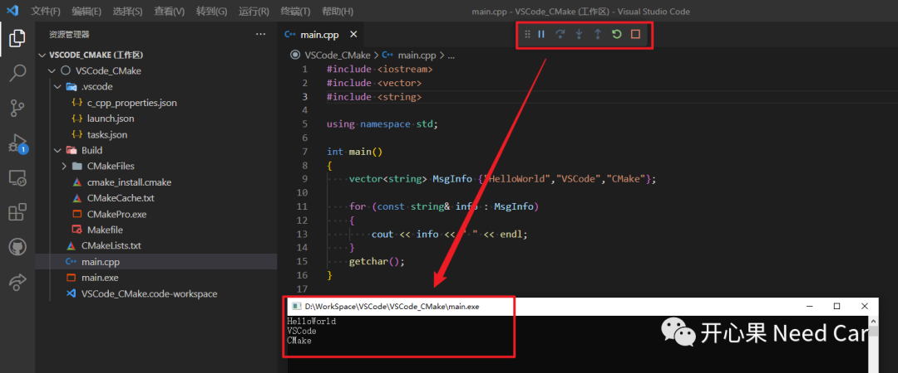
往期精彩回顾
Bootloader开发：为什么需要SBL（Secondary Bootloader）?
Autosar EcuM：APP由RUN到POST_RUN浅析